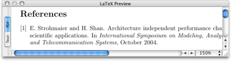
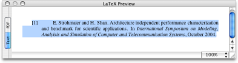

Previewing Typeset Output Previewing Typeset Output
Previewing Typeset Output Previewing Typeset OutputThe preview panel shows you the currently selected references as a formatted bibliography. The bibliography's format is based on the current style file (set in the preference pane TeX Preview). This helps in spotting errors and omissions in your references, as LaTeX and BibTeX are actually used to generate the PDF preview. The front matter and macros from the current bibliography document are used for previewing.


The preview is available as PDF (generated by LaTeX), or as Text (actually RTF/Rich Text Format), generated by LaTeX2RTF. Since LaTeX2RTF only interprets a subset of LaTeX and BibTeX commands and styles, results may vary for the Text preview, but its intent is to provide a formatted reference list suitable for pasting directly into TextEdit or similar programs.
An odd-sized page layout is used so that you don't have to scroll in order to see the text, which allows you to have a smaller preview window. However, this is not desirable for printed output, so you may wish to edit the LaTeX template file (see the TeX Preview preference pane for more details).